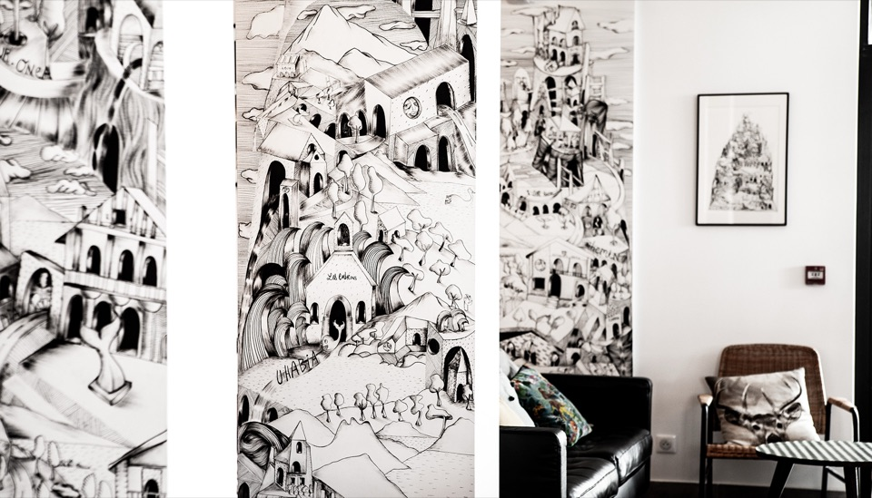

Fresques murales · Bidart
Koskenia.

Contexte
Sur les murs de l'auberge Koskenia, sur la place de Bidart, face à la mairie, Delwood a réalisé une fresque sur le patrimoine de ce village côtier. Le lieu devient un support de mémoire collective autant qu'un décor.
Concept
Le village se raconte en dessin : architectures, vagues, reliefs et toponymes locaux, traduits dans le langage graphique de Delwood, entre gravure, hachure et aplat.
- Lieu
- Auberge Koskenia, place de Bidart, face à la mairie
- Type
- Série de fresques murales
Koskenia - détail
Koskenia - intérieur de l'auberge